1위 Modern Web Guidance — 에이전트에게 최신 웹 기준을
영상은 이번 주 깃허브 트렌딩 저장소 여덟 개를 1위부터 하나씩 직접 써 보며 소개해요. 여덟 개 중 넷은 구글, OpenAI, 알리바바가 공개한 저장소예요. 먼저 전체를 한눈에 보면 이래요.
| 순위 | 저장소 | 만든 곳 | 영상 속 별 | 한 줄로 |
|---|---|---|---|---|
| 1 | Modern Web Guidance | 구글 크롬 팀 | 약 6,000 | 에이전트에게 최신 웹 기능 안내서를 넣어 줘요 |
| 2 | Sure | 커뮤니티 | 약 15,000 | 내 서버에 까는 가계부 |
| 3 | Codex Security | OpenAI | 약 13,000 | 취약점을 찾고 패치까지 만들어요 |
| 4 | Open Code Review | 알리바바 | 약 51,000 | 바뀐 코드를 줄 단위로 리뷰해요 |
| 5 | Chrome DevTools MCP | 크롬 개발자 도구 팀 | 약 56,000 | 에이전트가 진짜 크롬을 열어 확인해요 |
| 6 | Agent Skills | Addy Osmani | 약 116,000 | 명세부터 배포까지 순서를 지키게 해요 |
| 7 | Veyra | Likely7 | 약 2,200 | 게임·영상 화질과 프레임을 실시간으로 올려요 |
| 8 | Claude Trading Skills | tradermonty | 약 4,700 | 매매 전 위험 점검 순서를 잡아 줘요 |
순위는 영상이 붙인 순서이고, 별 개수가 많은 순서는 아니에요.
1위 Modern Web Guidance는 무엇을 바꾸나요
Modern Web Guidance는 구글 크롬 팀이 만든 안내서 묶음이에요. 코딩 에이전트는 학습한 시점의 옛 방식으로 웹 코드를 짜기 쉬운데, 이 도구가 최신 웹 기능을 쓰는 법을 알려 줘요.
아래 화면은 같은 메뉴 서랍을 두 번 만든 결과예요. 왼쪽 'Modern Web Guidance 없이'는 검은 서랍이 그냥 열려요. 오른쪽 '적용'은 밝은 서랍이 옆으로 부드럽게 밀려 열리고 닫혀요.
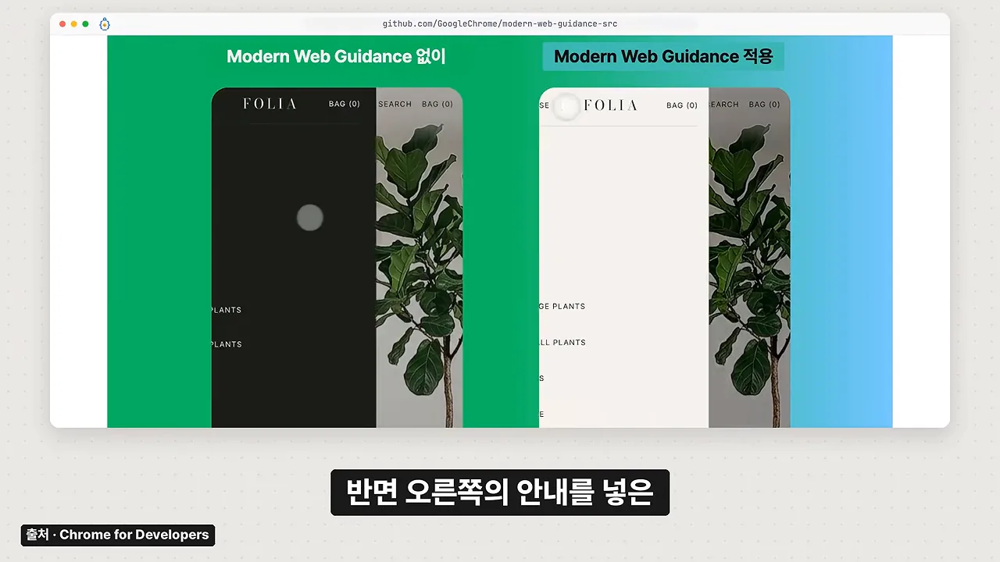
메뉴 서랍을 요청하면 에이전트가 맞는 안내서를 찾아 읽고 코드를 고쳐요. 바뀐 줄은 빨간 줄(지운 것)과 초록 줄(넣은 것)로 대조돼요. 아래 화면의 초록 블록이 서랍 스타일을 새로 짠 부분이에요.
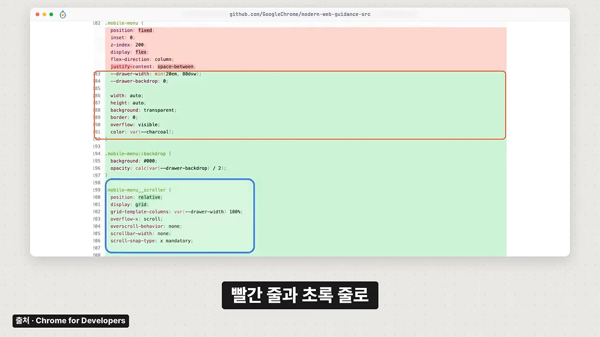
Claude Code에 플러그인으로 깔기
Claude Code에 플러그인으로 깔고 현대화 명령을 넣으면 에이전트가 폴더를 훑어요. 아래 터미널의 빨간 상자가 legacy-scan 명령이고, 결과 totalFindings: 4는 옛 방식 코드를 네 군데 찾았다는 뜻이에요. 안내서 검색은 인터넷 없이 내 컴퓨터 안에서 돌고, 어떤 브라우저가 기능을 지원하는지 알려 주는 Baseline 정보도 함께 줘요.
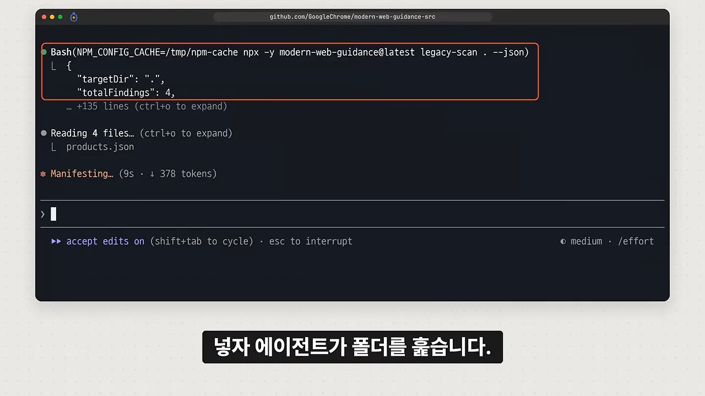
11월 10일 나온 1.0부터 Edge와 Firefox 팀이 합류했어요. 아래 발표 글 맨 위 항목이 기존 코드를 훑는 현대화 워크플로이고, 빨간 상자가 크로스 브라우저 협력 소식이에요.
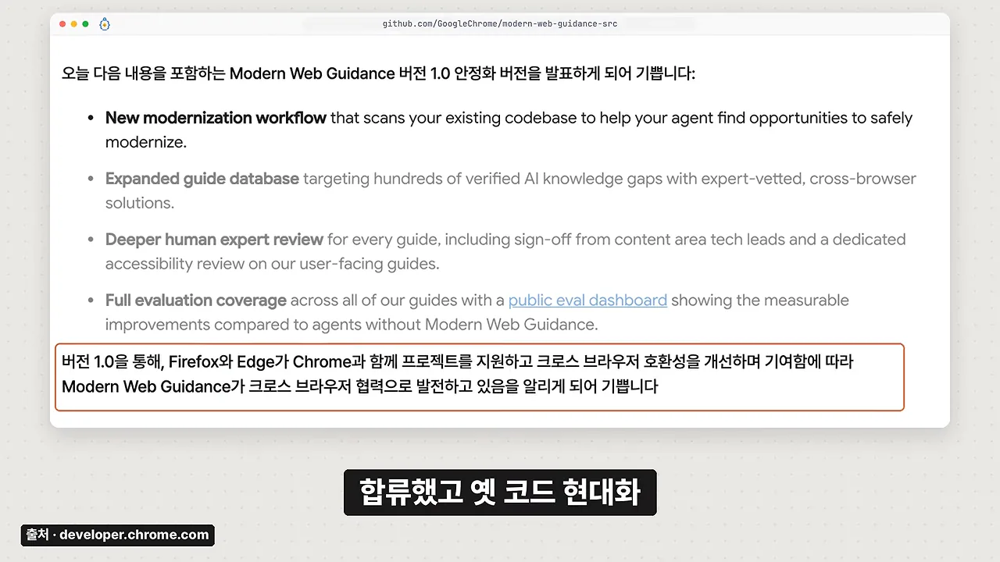
아직은 찾는 범위가 좁아요
해커 뉴스에는 자기 코드에 돌려 보니 두 건만 찾았다는 댓글이 있었어요. 크롬 팀 쪽 개발자는 현대화 검사가 아직 안내서의 20%만 다루지만, 한 달쯤 뒤엔 50% 가까이 될 거라고 답했어요.
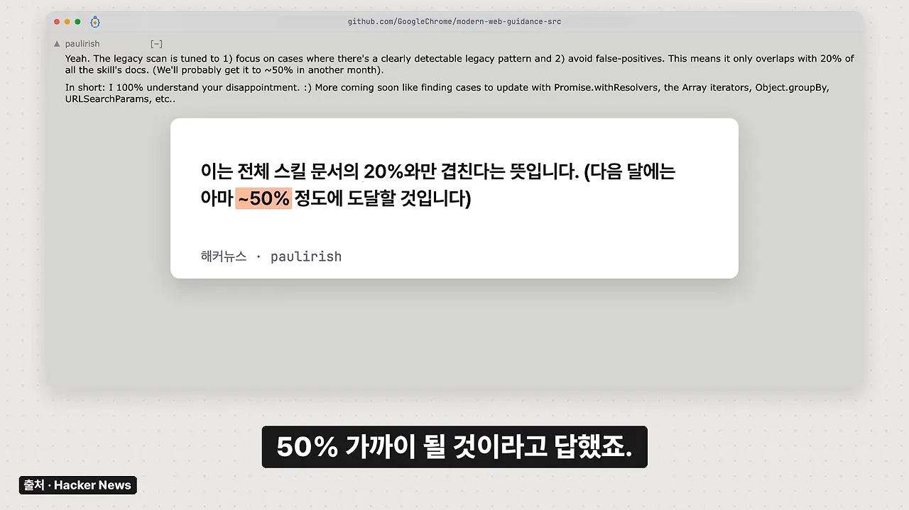
영상은 이 도구를 옛 방식으로 짠 웹 코드를 최신 브라우저 기준에 맞게 다듬고 싶은 사람에게 권해요.
2위 Sure — 내 서버에 까는 가계부
Sure는 계좌와 카드 지출을 한곳에 모아 보는 가계부 앱이에요. 회사 서비스에 가입하는 대신 내 서버에 직접 설치해서 쓰는, 이른바 셀프 호스팅 방식이에요.
출발이 특이해요. 아래 저장소 설명의 빨간 상자를 보면, 원래 회사가 개발에 거의 100만 달러를 쓴 뒤 앱을 오픈소스로 공개했어요. 회사가 손을 뗀 뒤로는 커뮤니티가 이어받아 Sure라는 이름으로 관리해요.
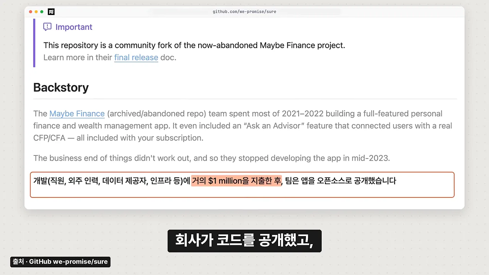
대시보드는 왼쪽 계좌 목록, 가운데 돈 흐름 그림, 오른쪽 AI(Artificial Intelligence) 패널로 나뉘어요. 아래 화면에서 오른쪽 AI 패널이 찾은 '평소와 다른 거래' 표와 예산 이상 목록이 보여요.
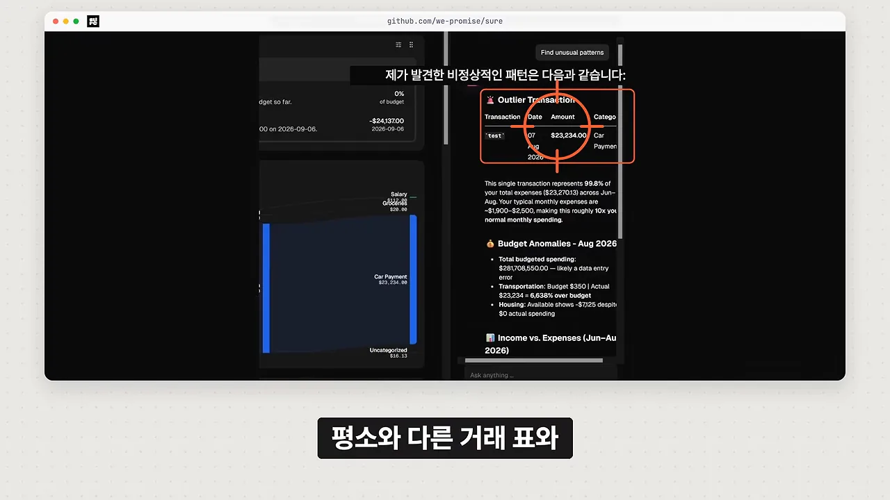
예산 화면은 항목마다 막대를 그려요. 예산을 넘긴 항목은 빨간색, 괜찮은 항목은 초록색이고, 맨 위에 전체 지출 게이지가 있어요.
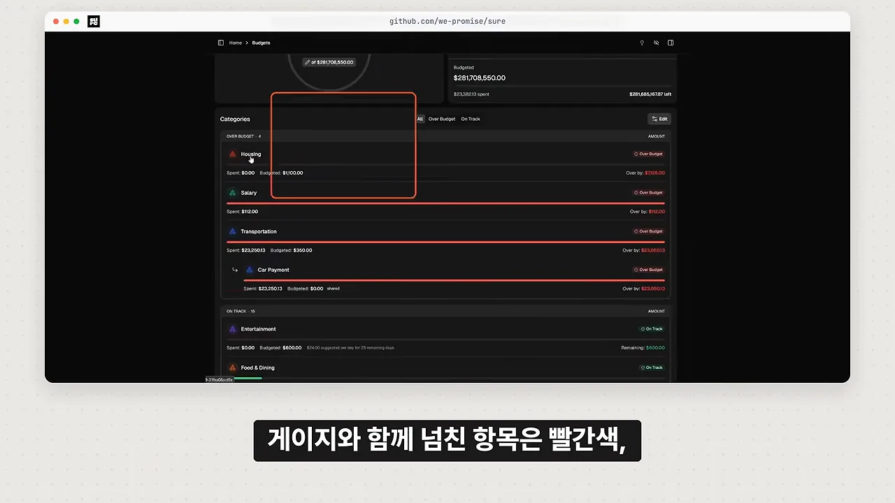
AI 비서와 잇되, 기록은 내 컴퓨터에
설정 페이지에는 AI 비서에 연결할 주소와 복사 버튼, Claude를 잇는 순서가 나와요. 아래 문서의 빨간 상자대로 Sure에는 MCP 서버가 들어 있어서, Claude 같은 외부 AI 비서가 내 재무 기록을 묻고 다룰 수 있어요. 연결하면 '지난달 어디에 돈을 많이 썼지?' 같은 질문을 할 수 있어요.
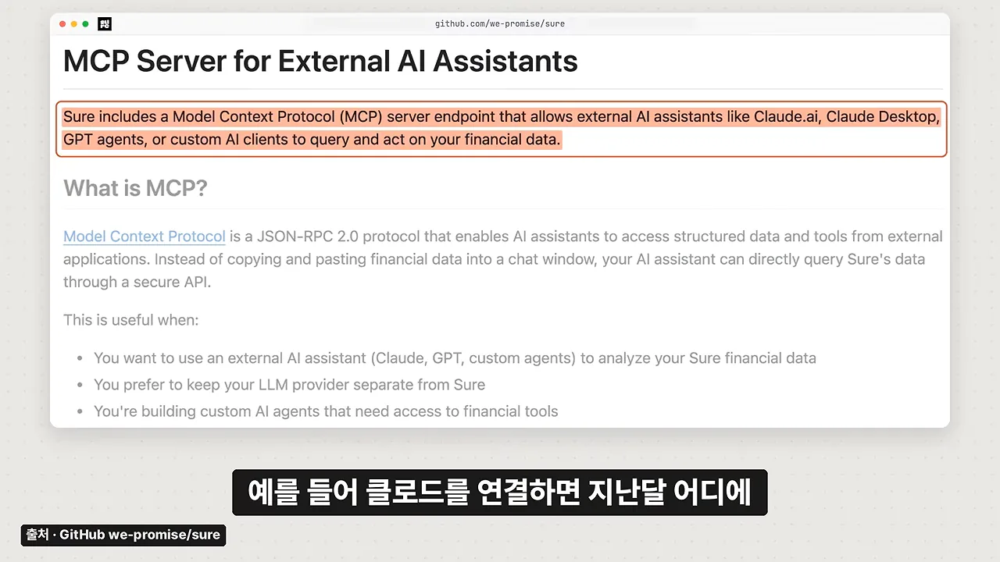
관리도 꾸준해요. 1년 넘게 매달 빠짐없이 정식 버전을 냈고, 10월 31일 판에는 평소 지출과 이번 달 지출을 견주는 화면이 들어왔어요. 아래 화면 오른쪽 막대가 항목별로 평소보다 얼마나 더(빨강) 또는 덜(초록) 썼는지 보여 줘요.
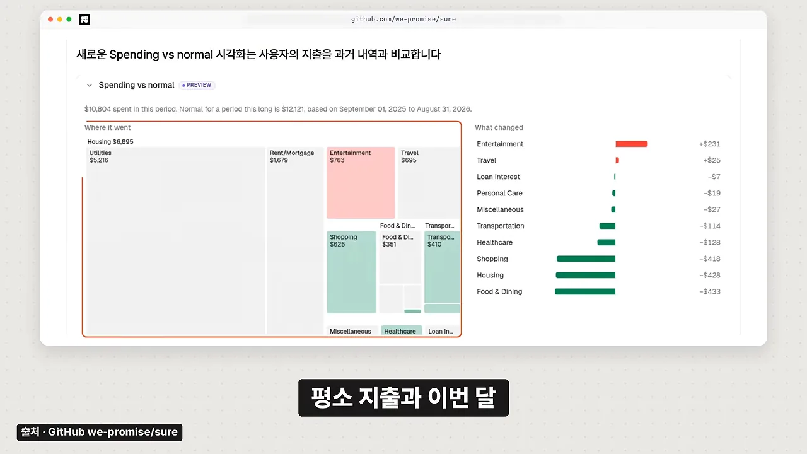
영상은 AI 비서를 쓰면서도 돈 기록은 남의 서버가 아니라 내 컴퓨터에 두고 싶은 사람에게 권해요.
3·4위 코드 보안 점검과 줄 단위 리뷰
3위와 4위는 둘 다 AI가 코드를 들여다보는 도구예요. Codex Security는 보안 취약점을 찾아 패치까지 만들고, Open Code Review는 바뀐 코드를 줄 단위로 리뷰해요.
3위 Codex Security — 찾고, 검증하고, 패치까지
OpenAI가 만든 보안 점검 도구예요. 명령어 하나로 취약점을 찾아 진짜인지 검증하고, 패치를 만들어 다시 확인해요.
영상은 OpenAI 발표 글을 근거로 들어요. 아래 문장의 밑줄처럼 OpenSSH, GnuTLS, PHP(PHP: Hypertext Preprocessor), Chromium 같은 오픈소스에서 치명적인 취약점을 찾았고, CVE(Common Vulnerabilities and Exposures) 14건이 할당됐어요. 다만 이건 OpenAI 서버에서 도는 서비스가 연구 미리보기 때 찾은 결과예요. 이 저장소는 같은 검사를 내 터미널에서 부르는 도구예요.
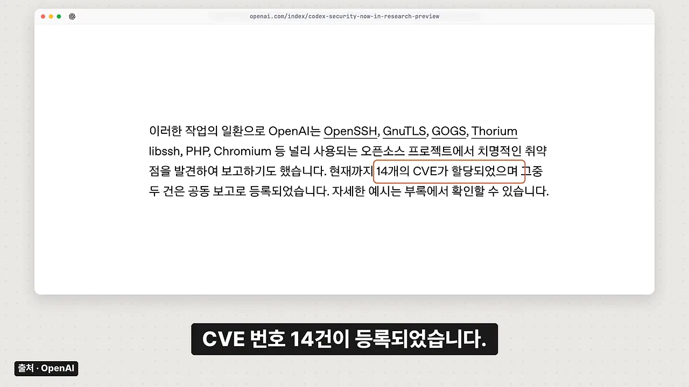
검사는 여러 작업자가 나눠서 해요. 아래 터미널에서 '작업자 1'은 결과를 검증하고 최종 판정을 내리고, '작업자 2'는 깊은 검사(Deep Scan) 스킬을 불러 코드를 따로 살펴요. 한쪽이 공격 지도를 그려 검증하면 다른 쪽이 결과를 합치는 식이에요.
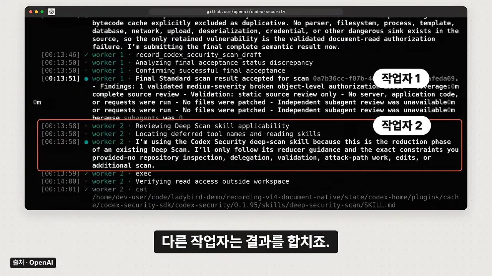
공식 시연에서는 35분 넘게 돌아 취약점 45개를 찾았어요. 아래 화면 맨 위 FINDINGS 줄에 '2 critical, 21 high, 17 medium, 5 low'가 보이고, ELAPSED는 35분 29초예요. 끝에는 찾은 항목을 검토하고 패치할지 묻는 질문이 떠요.
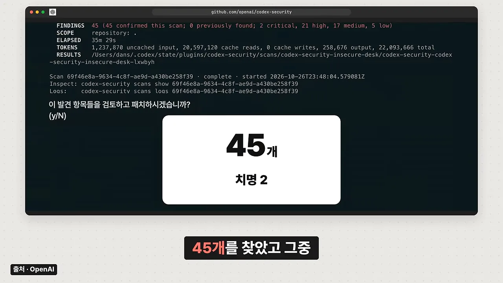
상세 창은 공격자가 어떤 길로 들어오는지 보여 줘요. 아래 공격 경로는 '사용자 ID 지정 → 관리자 권한 확인 통과 → 모든 권한 획득' 순서예요. 일반 사용자가 관리자 ID를 흉내 내서 권한 상승까지 가는 길이에요.
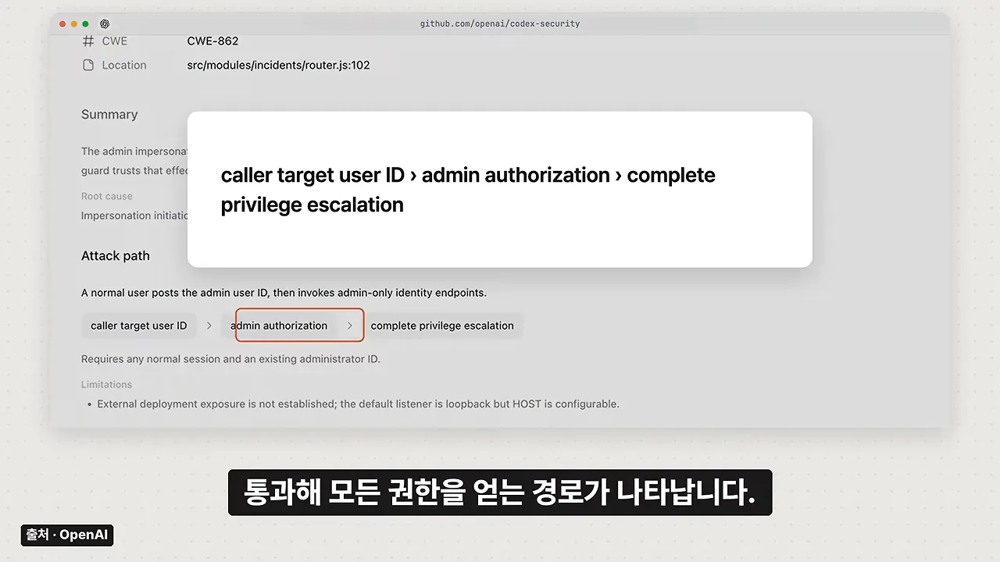
패치를 시키면 코드가 바뀐 모습이 빨간 줄과 초록 줄로 보여요. 아래 화면에서 새로 들어온 두 줄은 문서의 주인(owner_id)이 지금 로그인한 사용자와 다르면 403으로 막는 코드예요.
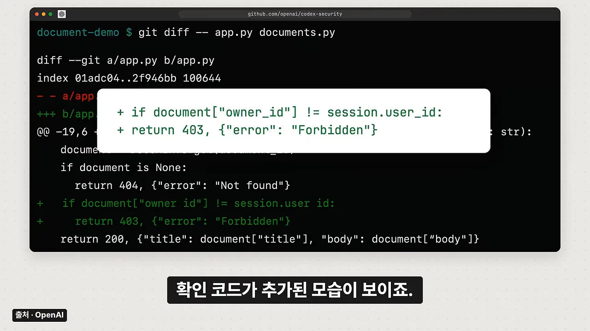
사용량과 비용은 미리 생각해야 해요
코드와 맥락을 OpenAI 서버의 모델이 검사하니 사용량이나 비용이 들어요. 해커 뉴스에는 작은 저장소를 검사하는데 1시간 가까이 돌다 중단됐고, Pro 플랜의 주간 사용량 절반을 썼다는 글이 올라왔어요. OpenAI 담당자는 받아들일 수 없는 결과라며 답을 달았어요.
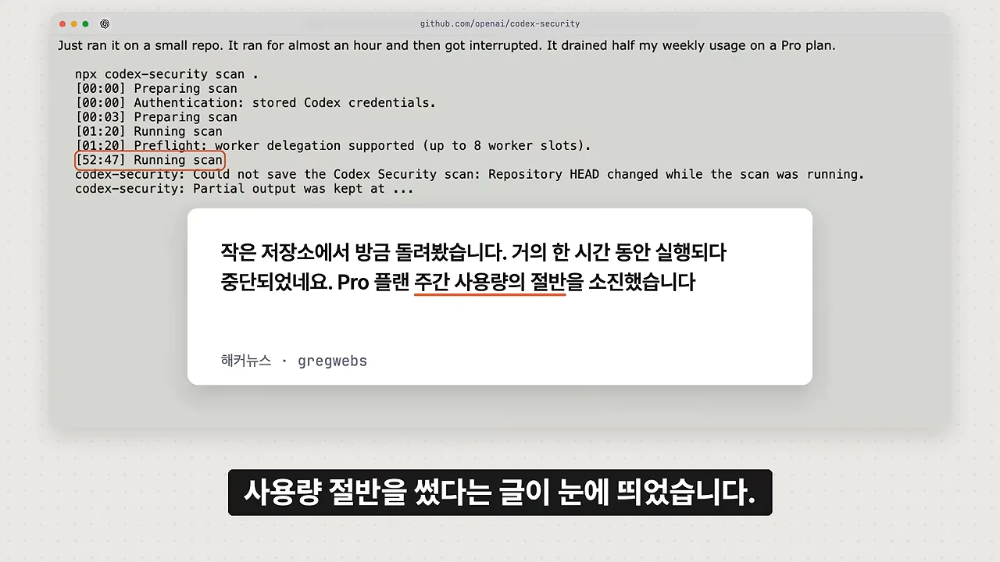
11월 12일 나온 0.10.0에서는 끊긴 검사를 이어 하는 기능과 예산 한도를 거는 기능이 들어왔어요. 영상은 검사 권한이 있는 내 코드에 자동 점검을 걸고 싶은 사람에게 권해요.
4위 Open Code Review — 줄 단위로 짚는 리뷰
알리바바가 사내에서 쓰던 리뷰 도구를 공개한 거예요. 아래 저장소 설명처럼 지난 2년 동안 사내 개발자 1만 명 넘게 써 왔어요. Git으로 바뀐 부분을 읽어 리뷰할 파일을 고르고, AI가 줄 단위로 지적을 남겨요.
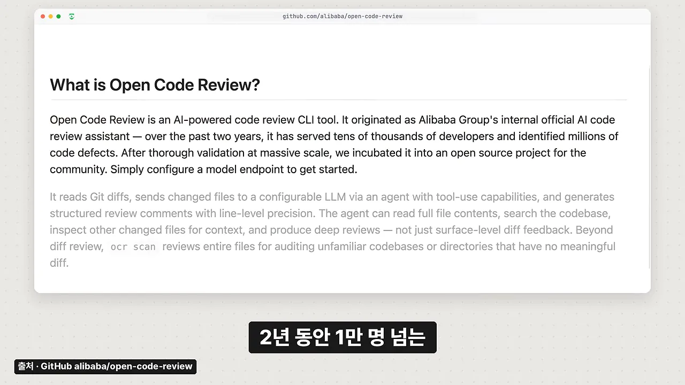
터미널에서 ocr review를 돌리면 코드 검색과 파일 읽기 도구가 차례로 움직여요. 시연에서는 파일 하나를 25초 동안 보고 지적 하나를 남겼어요. 아래 결과에서 빨간 줄은 지울 코드(INNER JOIN), 초록 줄은 넣을 코드(LEFT JOIN)예요. 위쪽 설명은 없는 컬럼을 참조하는 조인 조건을 짚은 'critical' 버그예요.
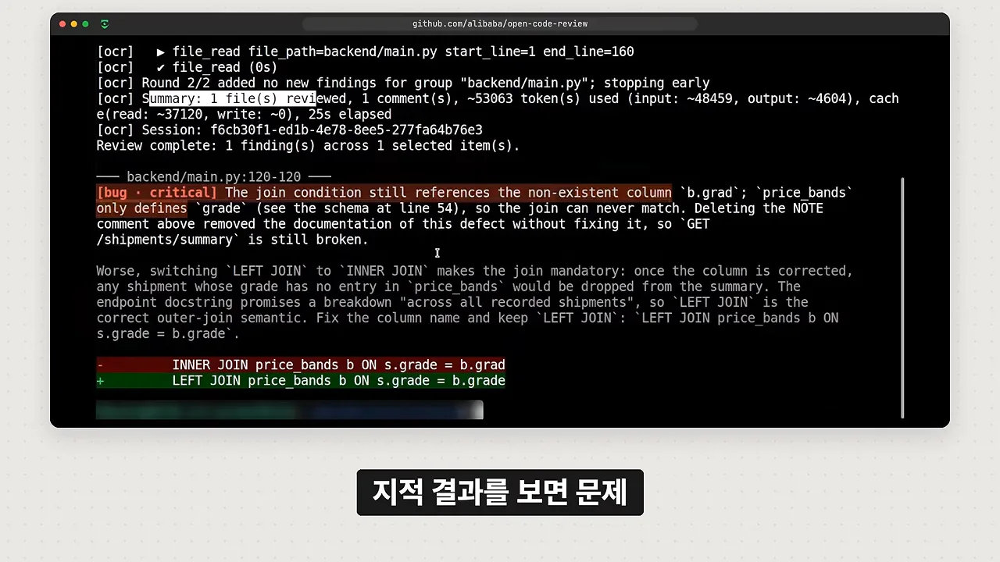
Claude Code 안에서도 쓸 수 있어요. 아래 화면처럼 /open-code-review:delegate-review 명령을 내리면 파일 고르기와 규칙 더하기 단계가 차례로 올라가요. 이 위임 리뷰는 전용 API(Application Programming Interface) 키를 따로 넣지 않고 지금 쓰는 Claude Code로 리뷰해요.
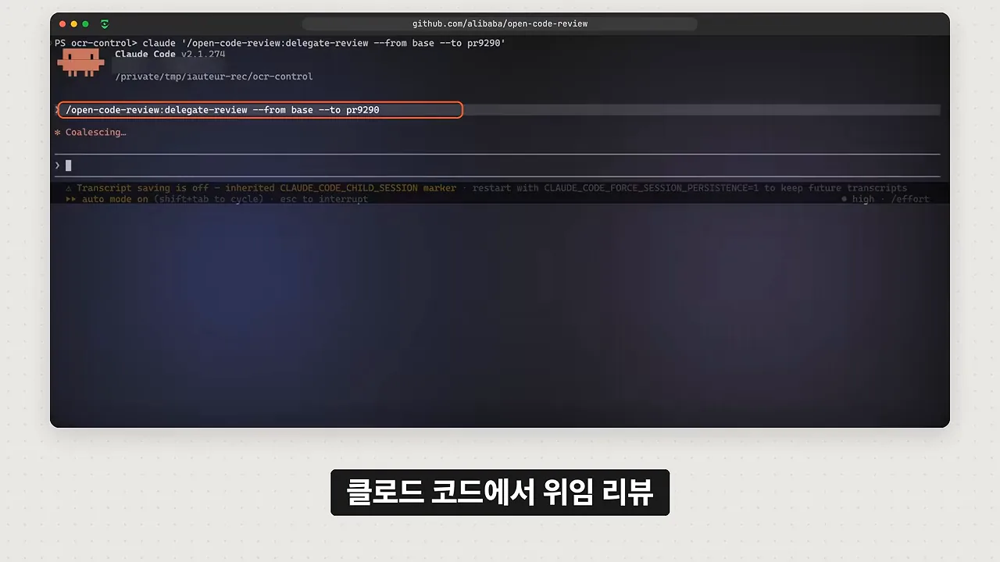
토큰은 적게, 대신 덜 찾아요
알리바바가 직접 잰 결과, 같은 모델을 쓴 범용 에이전트(Claude Code)보다 토큰을 약 9분의 1만 썼어요. 아래 벤치마크 문단은 정밀도와 F1도 더 높았다고 적고 있어요.
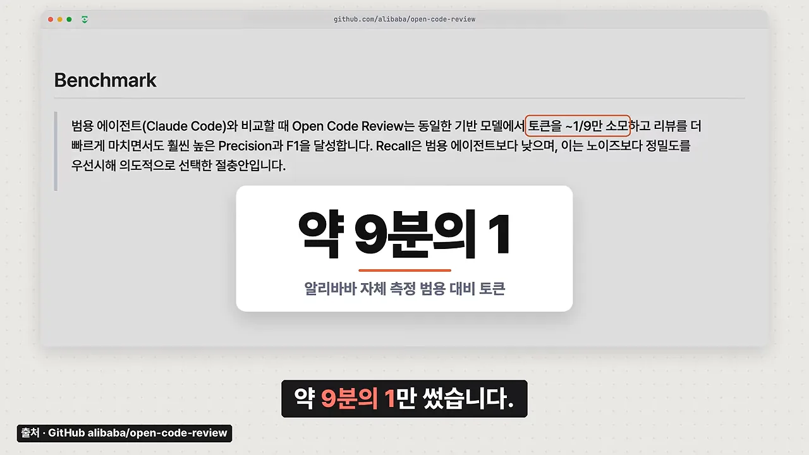
대신 실제 버그를 빠짐없이 찾는 비율인 재현율은 범용 에이전트보다 낮아요. 아래 표에서 Claude-4.6-Opus로 돌린 Open Code Review의 재현율은 20.00%(1,505개 중 301개)이고, 정밀도는 33.90%예요. 개발팀은 헛지적을 줄이려고 일부러 이쪽을 골랐다고 밝혀요.
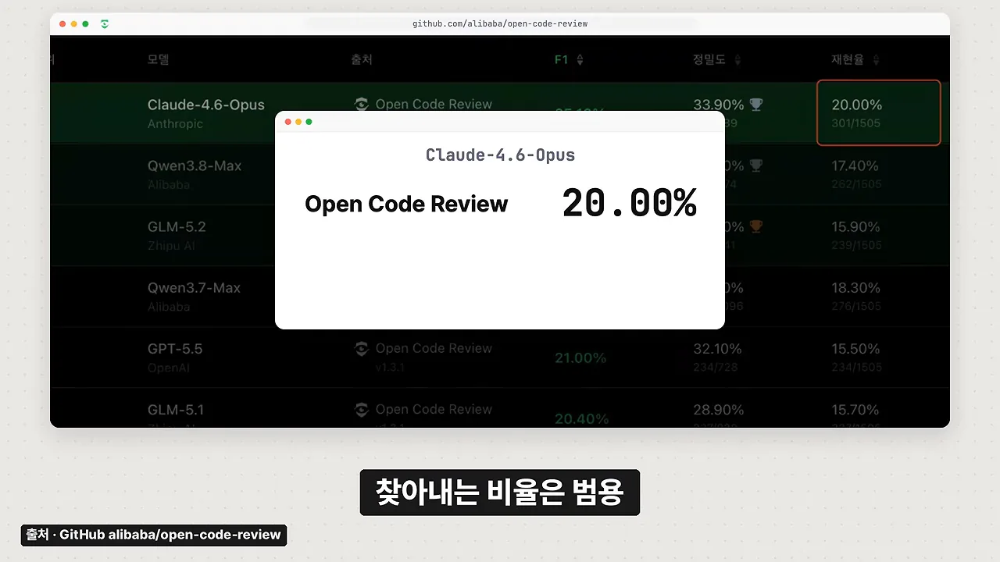
영상은 따로 API 키 없이, 지금 쓰는 Claude Code로 바꾼 코드를 줄 단위로 지적받고 싶은 사람에게 권해요.
5·6위 브라우저를 여는 에이전트, 순서를 지키는 에이전트
5위와 6위는 에이전트의 일하는 방식을 바꿔요. Chrome DevTools MCP는 에이전트에게 진짜 브라우저를 쥐여 주고, Agent Skills는 일의 순서를 정해 줘요.
5위 Chrome DevTools MCP — 에이전트가 크롬을 직접 열어요
Puppeteer 팀과 같은 크롬 개발자 도구 팀이 낸 공식 도구예요. 에이전트가 진짜 크롬 창을 열어 페이지를 누르고, 성능과 오류를 직접 확인해요.
성능 개선을 요청하면 크롬 창이 하나 열려요. 아래 화면 오른쪽 주소창 아래 '자동화 프로그램이 조종 중인 크롬' 표시가 그 창이에요. 에이전트는 성능을 기록하고, 화면이 늦게 뜨는 원인과 개선점을 터미널에 쏟아내요. 그다음 이미지 태그를 고치고 성능을 다시 기록해 확인해요.
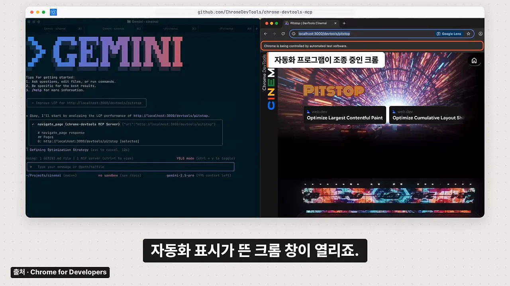
네트워크 오류도 읽어요. 실패한 네트워크 요청을 고르면 에이전트가 그 요청을 읽고 이유를 설명해요. 아래 진단은 클라이언트가 FormData로 보내는데 서버는 JSON(JavaScript Object Notation)만 받아서 400 오류가 났다고 짚고, JSON으로 보내도록 고치겠다고 해요.
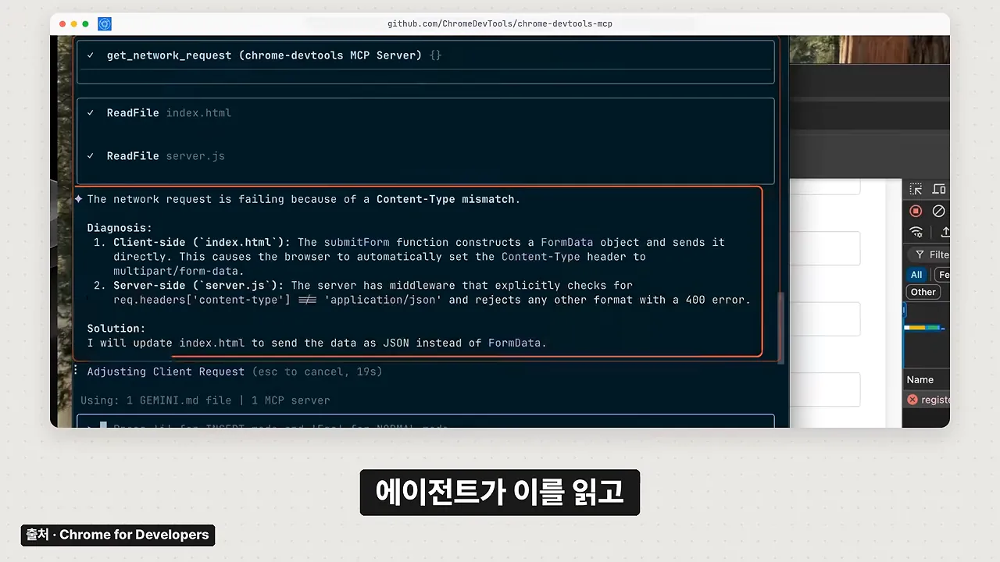
발표자도 Claude Code에 페이지 성능 확인을 요청해 직접 돌려 봤어요. 아래 화면의 요청은 'localhost:8765 페이지 성능 확인해 줘'이고, 바로 아래 chrome-devtools - list_pages 도구가 불려요. 크롬이 열리고 결과가 돌아왔다고 해요.
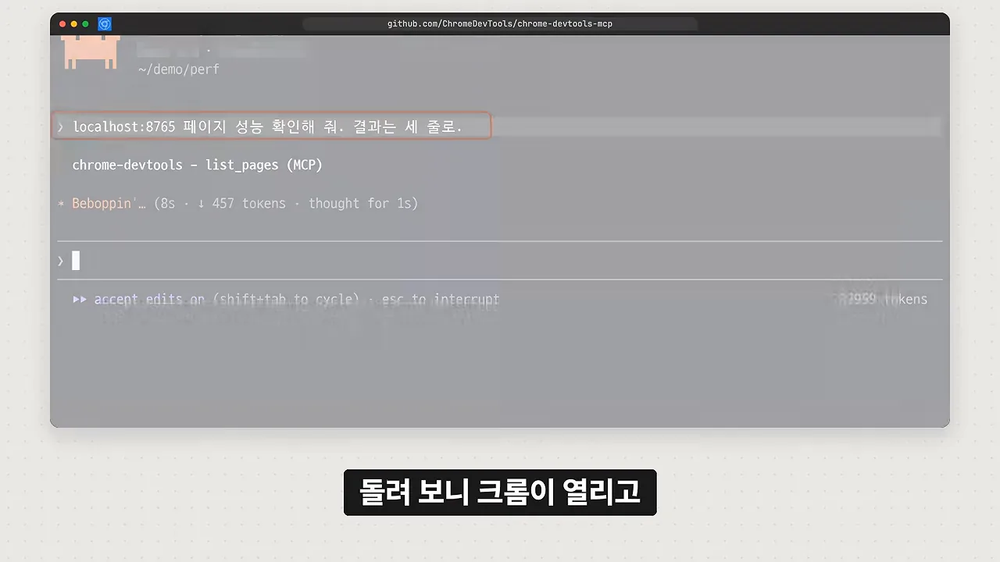
1위 도구와 짝으로 쓰기
크롬 팀은 1위 Modern Web Guidance 발표에서 두 도구를 함께 쓰라고 권했어요. 아래 글의 두 줄이 그 이유예요. Modern Web Guidance는 코드를 짜기 전에 필요한 지식을 주고, DevTools 쪽은 실제로 돌려 보며 확인하고 고치는 눈을 줘요.
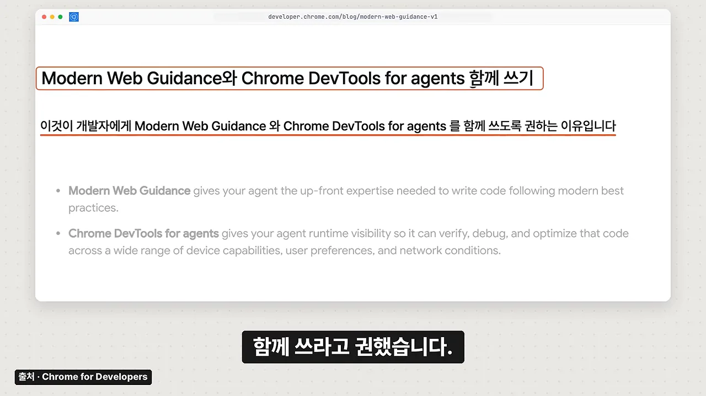
둘을 묶으면 흐름은 이렇게 돌아요. 고친 뒤 다시 기록해 확인하는 고리가 핵심이에요.
flowchart TB A["요청: 이 페이지 빠르게 해 줘"] --> B["Modern Web Guidance
최신 방식 안내서로 코드 작성"] B --> C["Chrome DevTools MCP
진짜 크롬을 열고 성능 기록"] C --> D{"느린 원인이나
오류가 남았나요?"} D -- "네" --> B D -- "아니요" --> E["완료"]
영상은 에이전트에게 웹 화면 검증과 브라우저 디버깅까지 맡기고 싶은 사람에게 권해요.
6위 Agent Skills — 시니어처럼 순서를 지키게
Addy Osmani가 만든 저장소예요. 에이전트가 시니어 개발자처럼 순서를 지키며 일하게 해요. 아래 그림처럼 명세, 계획, 구현, 검증, 리뷰, 배포 여섯 단계를 차례로 거치고, 단계마다 /spec, /plan 같은 명령이 붙어 있어요.
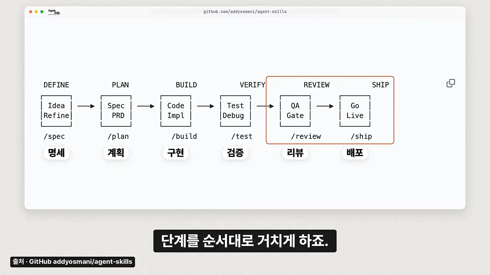
화면 속 칸을 누르면 그 단계에 맞춘 스킬 목록이 아래로 바뀌어요. 아래는 배포(Ship) 칸을 누른 모습으로, 깃 작업 흐름, CI(Continuous Integration)/CD 자동화, 문서화, 출시 체크리스트 같은 스킬이 나열돼요. 설치할 때는 25개 스킬 중 필요한 것만 골라 담을 수 있어요.
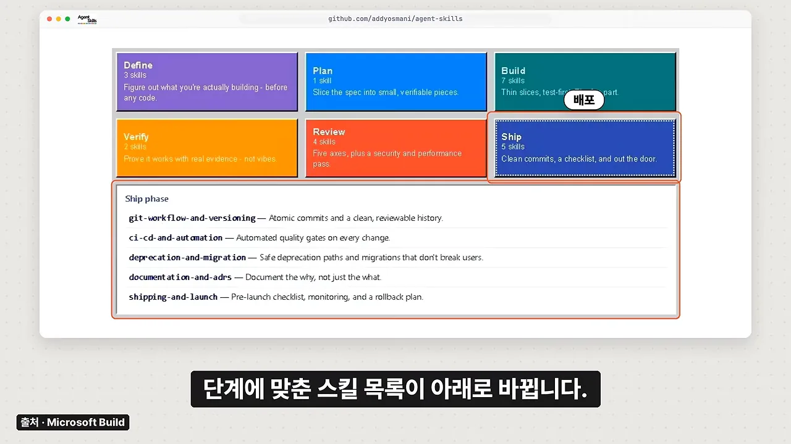
발표자가 Claude Code에 직접 /spec을 넣어 보니, 에이전트가 코드 대신 명세 문서부터 써요. 아래 화면에서 SPEC.md에 '할 일 목록 (Todo) - V1' 제목과 목표, 사용자 스토리가 먼저 적혀요.
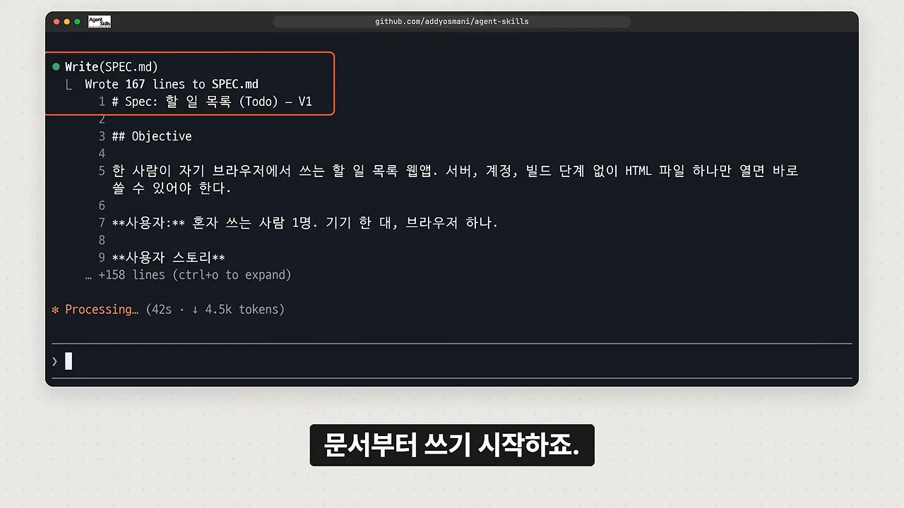
단계마다 부르는 슬래시 명령어는 모두 아홉 개예요. 아래 표의 가운데 열이 그 명령이고, 오른쪽 열이 각 명령의 원칙이에요. 예를 들어 /spec은 '코드보다 명세 먼저', /test는 '테스트가 증거'예요. 명령어 한 번으로 70개 넘는 코딩 에이전트에 스킬을 넣을 수 있어요.
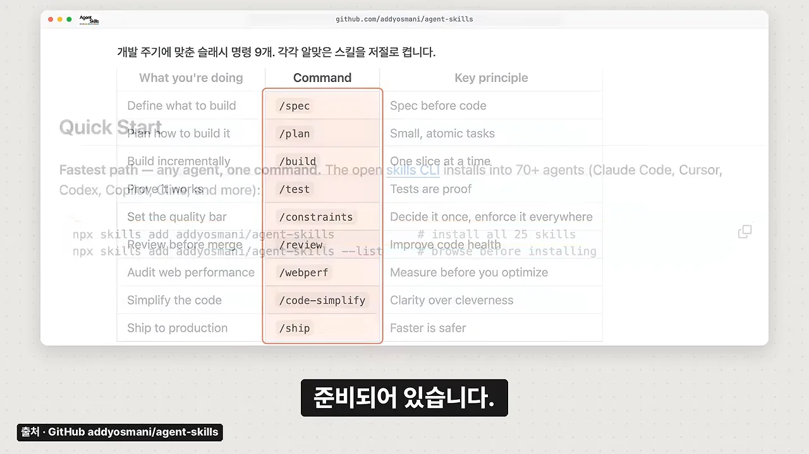
11월 14일 판(0.6.16)에서는 명세에 버전이 붙었어요. 아래 릴리스 노트처럼 기능을 바꿀 때는 명세를 다시 쓰는 대신 작은 변경 명세를 따로 써요. 처음 한 번 쓰고 끝나던 명세가 기능이 바뀔 때마다 따라가게 된 거예요.
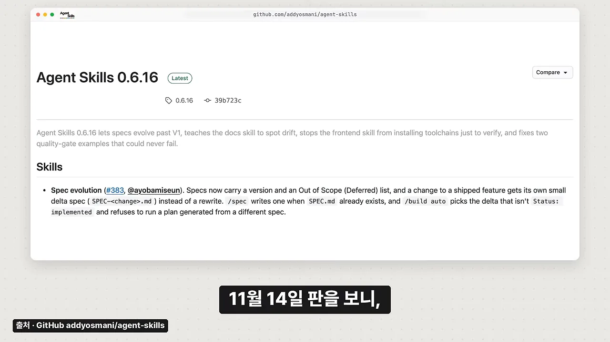
영상은 에이전트가 코드부터 짜지 않고 사람 팀처럼 명세, 검증, 리뷰 순서를 지키게 하고 싶은 사람에게 권해요.
7·8위 게임 화질 개선 앱과 투자 점검 스킬
마지막 두 개는 개발 도구가 아니에요. 7위는 게임과 영상 화질을 올리는 앱이고, 8위는 개인 투자자를 위한 Claude 스킬 묶음이에요.
7위 Veyra — 화질과 프레임을 실시간으로
Veyra는 따로 쓰던 화질 개선 도구들을 앱 하나로 합쳤어요. 흐린 화면을 또렷하게 다듬는 초해상도와, 프레임 사이에 새 프레임을 끼워 넣는 프레임 생성을 한곳에서 처리해요.
먼저 화질이에요. 아래 화면은 빛줄기를 기준으로 나뉘어 있어요. 왼쪽 빨간 상자 쪽이 '4K', 오른쪽이 원래의 '720p'인데, 왼쪽이 더 또렷해요.
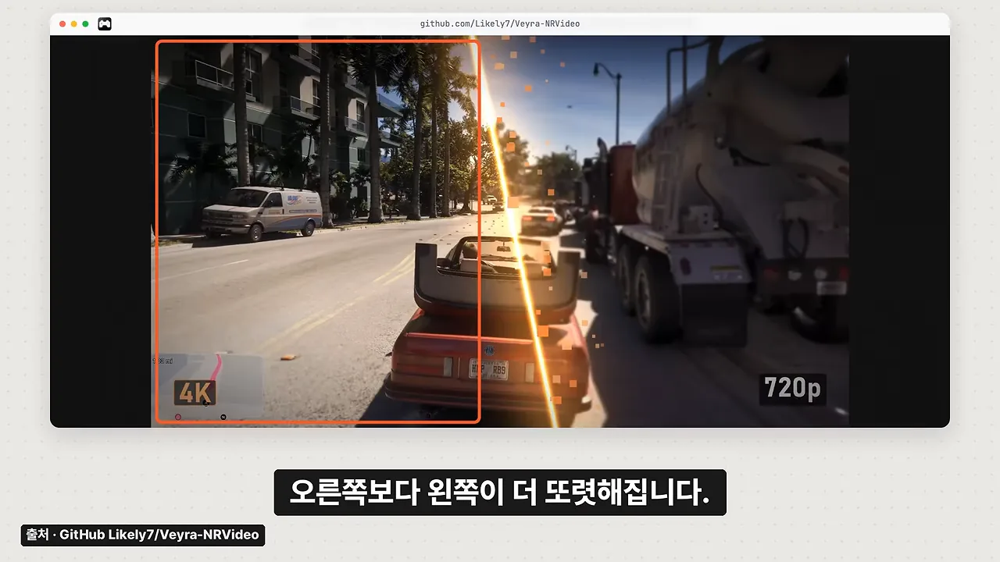
다음은 프레임이에요. 아래 화면 위쪽 '30 FPS'가 '120 FPS ×4'로 올라가고, 아래 눈금 막대도 네 배로 촘촘해져요. 1초에 보여 주는 장면 수가 네 배가 된다는 뜻이에요.
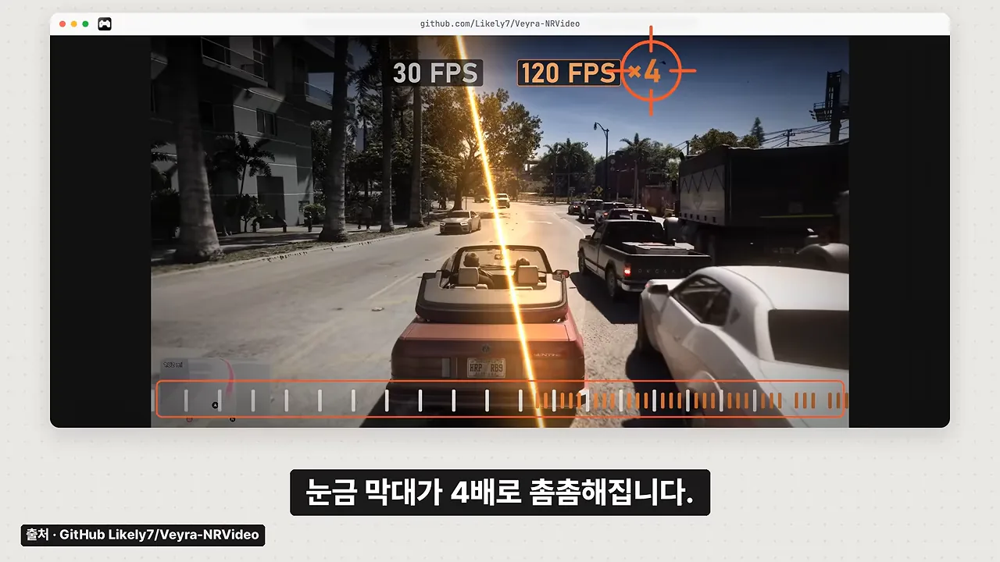
홈 화면에서는 영상 파일, 캡처 카드, PS5(PlayStation 5) 스트리밍, PC(Personal Computer) 스트리밍, Xbox 스트리밍, 화면 캡처 여섯 가지 입력 중 하나를 골라요. 재생 중에는 오른쪽에 설정 판이 열려요. 아래 화면에서 '화질 설정' 탭 옆 '프레임 생성' 탭이 열려 있고, 프레임 생성 방식과 배수(2x, 3x, 4x)를 바로 바꿀 수 있어요.
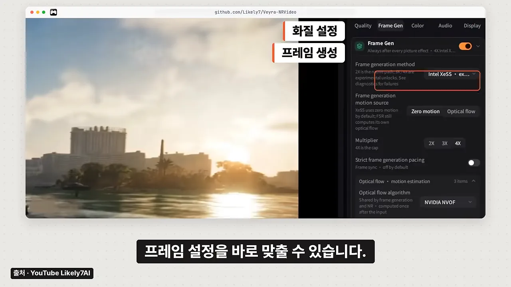
릴리스 노트에서 눈에 띄는 건 개발 방식이에요. 아래 2.1.2 노트는 Claude와 Codex가 완성해 main에 합친 기능과 수정을 모았다고 적고 있어요.
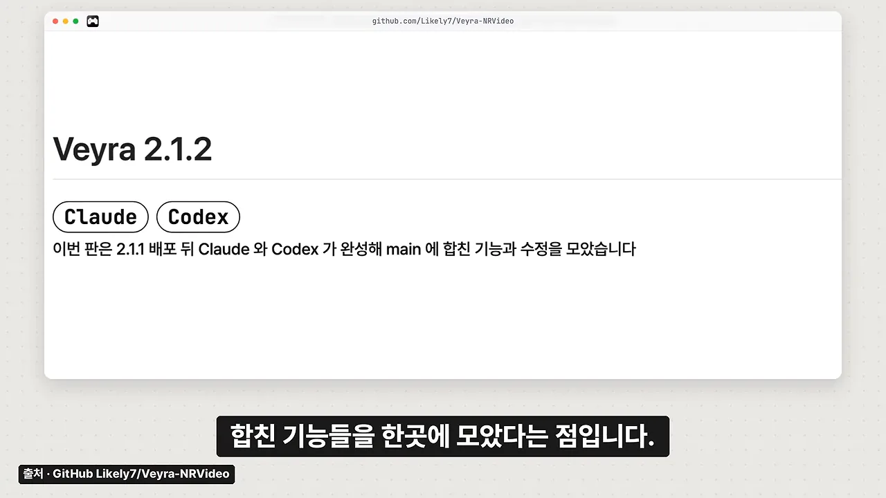
조건도 있어요. 콘솔 게임을 띄우려면 캡처 카드가 있어야 하고, Windows 11, DirectX 12, 그래픽 카드가 필요해요. 영상은 콘솔 게임을 PC로 받아 더 또렷하고 부드럽게 보고 싶은 사람에게 권해요.
8위 Claude Trading Skills — 매매 전 위험 점검
개인 투자자를 위해 시장 점검부터 매매 계획, 기록, 복기까지 정리해 주는 Claude 스킬 70여 개 묶음이에요. 아래 README의 빨간 상자가 목표예요. 매수·매도 결정을 AI에게 넘기는 게 아니라, 시장 분석과 위험 관리, 매매 계획과 기록 과정을 체계화하는 거예요.
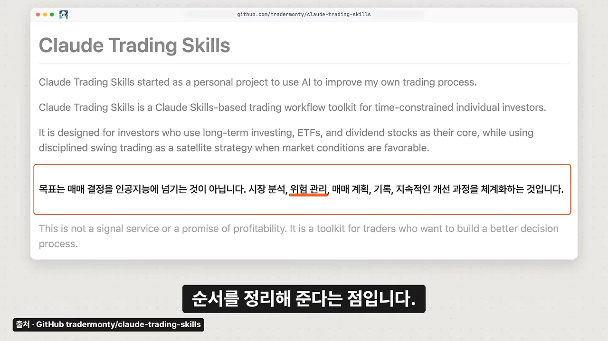
Navigator는 목표를 받아 먼저 할 일을 추천해요. 아래 화면의 목표는 '매일 아침 15분, 오늘 위험을 감수할 수 있는가?'이고, 추천은 'Market Regime Daily' 작업이에요. 하루 약 15분, 유료 API 키 없이 돌고, 필요한 스킬 세 개가 함께 적혀 있어요.
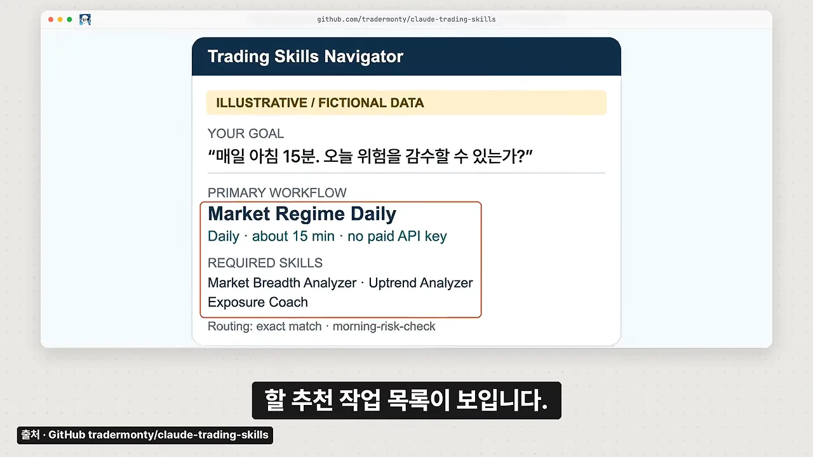
시장 상태 요약은 지금 얼마나 투자해도 되는지를 알려 줘요. 아래 예시는 투자 비중 상한 36%, 상태는 'REDUCE_ONLY'(비중 축소만 허용)예요. 이 화면도 설명용 가상 데이터예요.
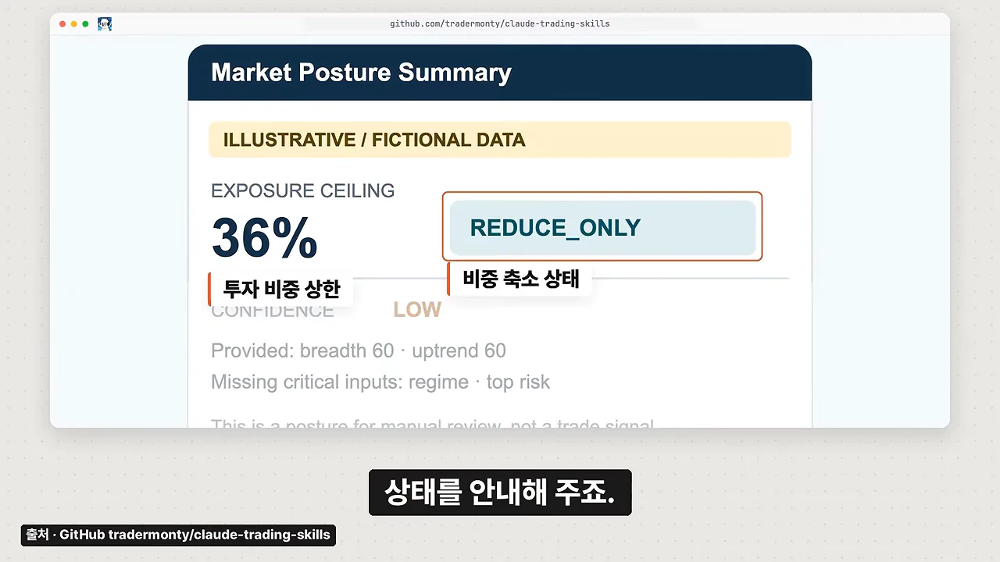
발표자가 Claude Code에 계좌 크기, 진입가, 손절가를 넣고 물어보니 /position-sizer 스킬이 살 주식 수를 계산했어요. 아래 화면의 빨간 상자가 실제로 돈 스크립트이고, --risk-pct 1.0은 한 번의 매매에서 계좌의 1%까지만 잃도록 잡은 값이에요.
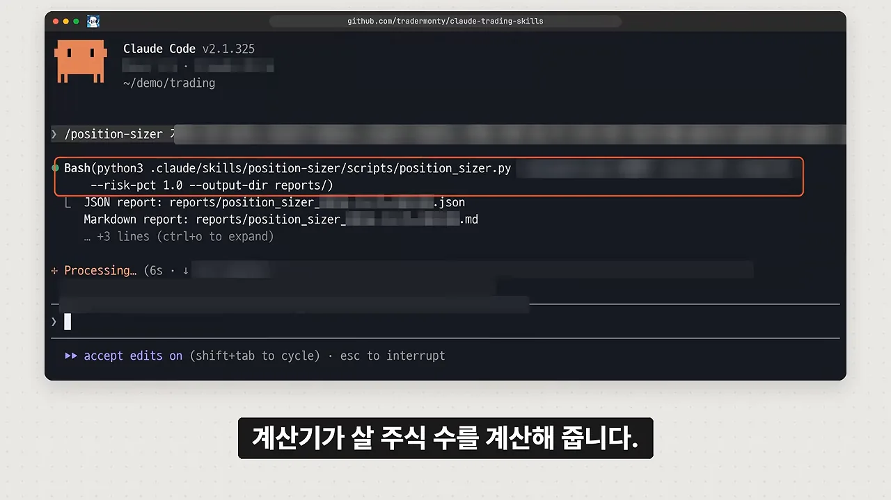
이 계산기처럼 유료 데이터 키 없이 바로 쓸 수 있는 스킬이 다섯 개 들어 있어요. 아래 목록의 세 번째가 방금 본 position-sizer이고, 외부 입출력 없이 계산만 해요.
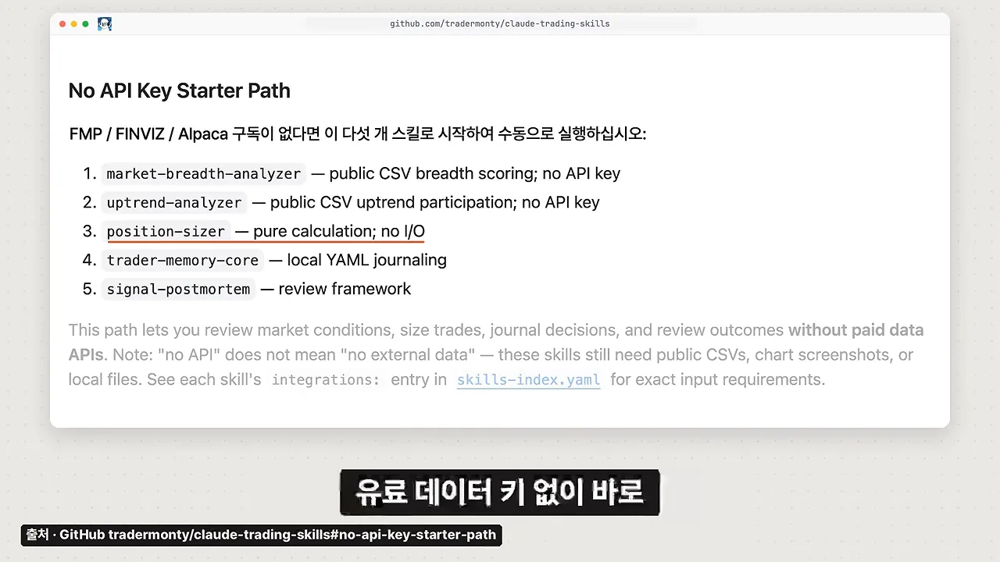
종목 탐색은 미국 주식 기준으로 돌고, AI가 증권사에 주문을 넣지는 않아요. 수익을 약속하는 신호 서비스가 아니라, 투자자가 스스로 매매 기준을 지키게 돕는 도구예요. 영상은 AI에 주문을 맡기지 않고 매매 전 위험 점검을 습관으로 만들려는 미국 주식 투자자에게 권해요.
다 쓸 필요는 없어요
영상의 마무리는 간단해요. 여덟 개 저장소가 하는 일이 저마다 달라서 모두 쓸 필요는 없고, 지금 하는 일에 맞는 저장소 하나부터 가볍게 열어 보면 충분하다고 해요.